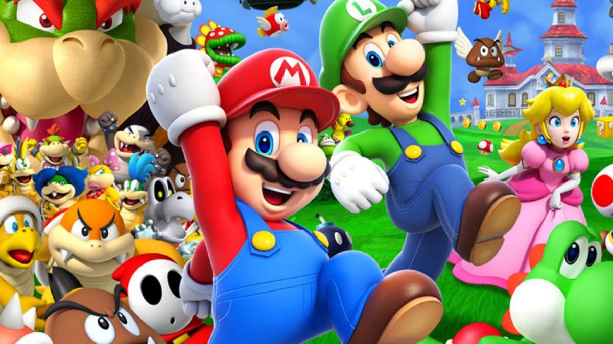

En Super Mario Bros., el jugador asume el papel de Mario, el protagonista de la serie. El hermano menor de Mario, Luigi, está controlado por un segundo jugador en el modo multijugador del juego y asume el mismo rol de trama y funcionalidad que Mario. El objetivo es recorrer el Reino Champiñón , sobrevivir a las fuerzas antagónicas de Bowser y salvar a la Princesa Peach. Es un videojuego de plataformas de desplazamiento lateral; el jugador se mueve del lado izquierdo al derecho de la pantalla para alcanzar un asta de bandera al final de cada nivel.
El mundo del juego presenta monedas dispersas para que Mario las recoja, así como ladrillos especiales marcados con un signo de interrogación (?) , que cuando el jugador los golpea pueden revelar más monedas o un elemento especial. Otros ladrillos «secretos», normalmente invisibles, pueden contener más monedas u objetos raros. Si el jugador obtiene un Súper Hongo, Mario crece hasta duplicar su tamaño y adquiere la capacidad de romper ladrillos encima de él. Si Mario es golpeado en este modo, en lugar de morir, vuelve a su tamaño estándar.
Los jugadores comienzan con una cierta cantidad de vidas y pueden ganar vidas adicionales recogiendo hongos verdes escondidos en ladrillos, o recolectando 100 monedas, derrotando a múltiples enemigos seguidos con un casco de Koopa o golpeando enemigos en sucesión sin tocar el suelo. Mario pierde una vida si sufre daños cuando es pequeño, cae en un agujero sin fondo o si se acaba el cronómetro del nivel. El juego termina cuando el jugador se queda sin vidas, aunque hay una opción de «continuar» en la pantalla de fin del juego, lo que permite a Mario renacer de la primera fase del mundo en la que murió el jugador.
Pulse la imagen para volver al inicio 